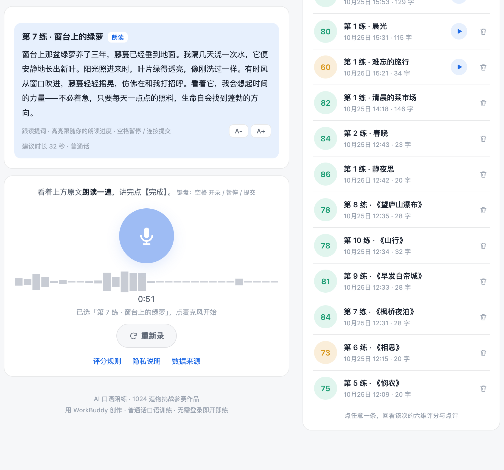
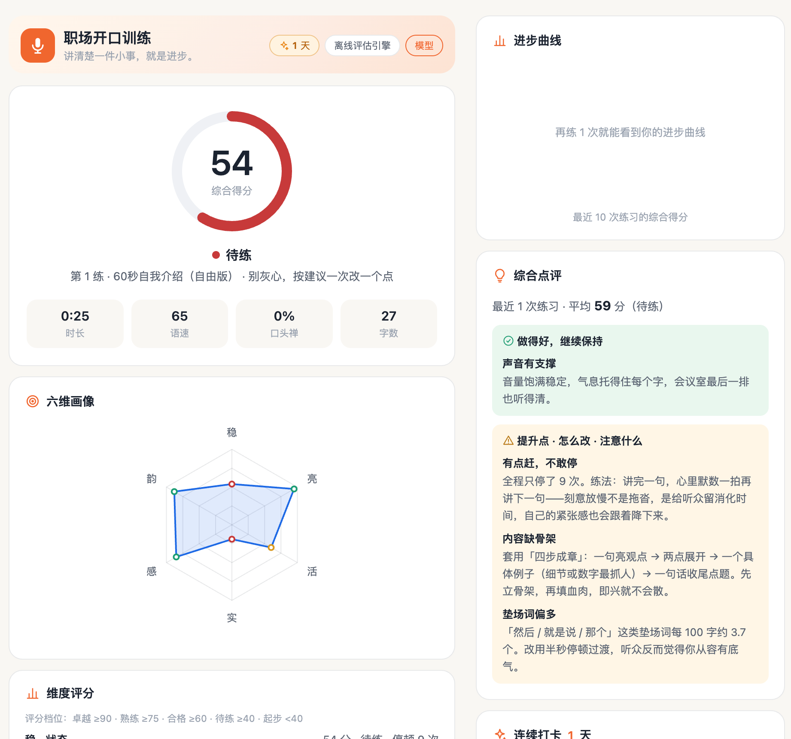
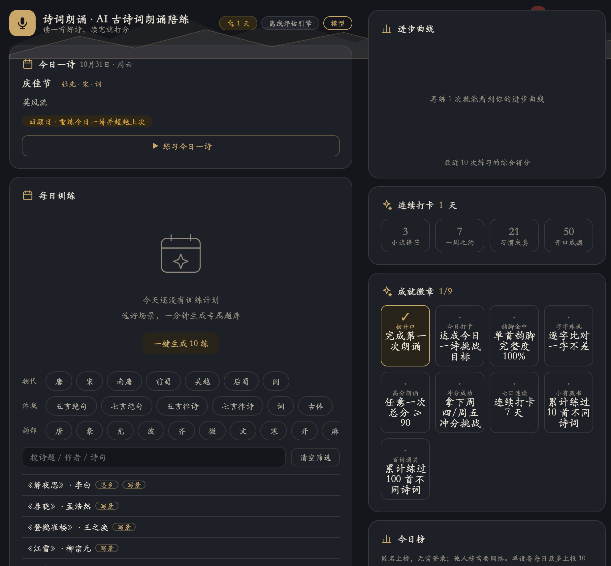
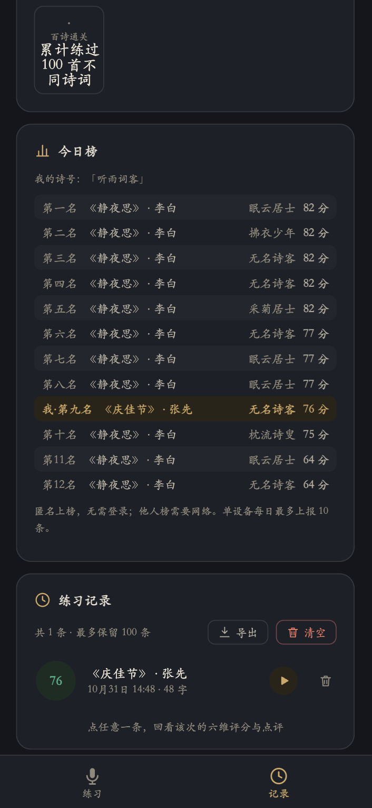

三个应用表面是三个产品，底层是同一套引擎。从你开口说话开始，数据沿五步流动；上层由两段提示词驱动 AI 出题，底部由一条隐私基线兜住。
六维评分在三个应用里同名不同义——「实」在开口练是扎实、在职场说话是成章、在诗词朗诵是完整。同一引擎，每个场景重新定义一遍评分语义。




每个应用里真正干活的提示词只有两条，在应用内均开放自定义，温度 0.3 压住发散性。
诗词版还会额外喂入：诗的原文、参考注音与韵脚标注；逐字比对先在本地完成，模型只负责生成「精确练习法」。